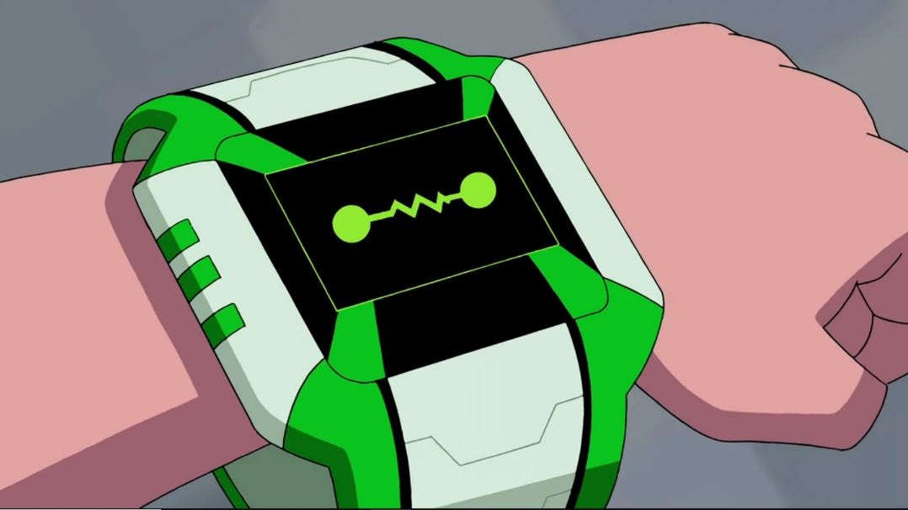
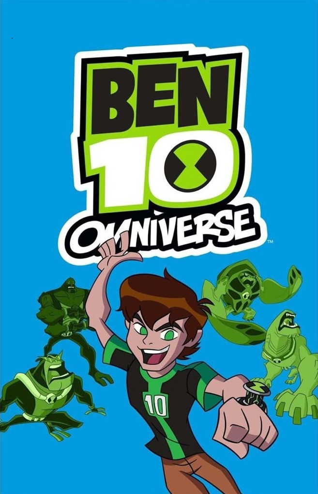

ALIENÍGENAS DEL OMNITRIX DEFINITIVO
Este omnitrix es la forma final del definitivo el cual cumple con la misión de preservar las especies de mejor forma y ser un dispositivo que sirve para la protección del multiverso en manos de Ben 10. Este reloj cuenta con un menú de selección más intuitivo para el usuario, tiene la función de escaneo de ADN, la de autodestrucción y la del seguro de vida, además de contar con una nueva función la cual le otorga al alien elegido armamento si es requerido.

FEEDBACK
Feedback es el nombre de la especie conductoid la cual proviene de la nébula Teslavorr. El nombre del alien significa lo que hace, siendo su poder absorber toda energía que le lancen (incluyendo un Big Bang) y lanzarla potenciada y modificada haciendo que su nombre cobre sentido por devolver el ataque.
APARECE EN:

BLOXX
Este alien es un segmentasapien nativo del planeta Polyominus. Esta especie tiene la capacidad de construir todo tipo de cosas con las partes de colores de su cuerpo, siendo capaces de crear murallas en segundos y poder reconstruirse después de haber sido destruido.
APARECE EN:
GRAVATTACK
Esta especie es un galilean y su origen es la órbita del planeta Keplor. Gravattack es un mini planeta viviente el cual orbita como un asteroide, teniendo la capacidad de controlar la gravedad de dos objetivos que están a su alcance, cuando se transforman en un asteroide afectan todo a su alrededor elevando todo y pueden girar tan rápido que pueden crear un agujero negro.
APARECE EN:
SHOCKSQUATCH
Este alienígena que Ben 10 llamó como "Shocksquatch" es de la especie gimlinopithecus proveniente del planeta Pattersonea el cual se desconoce como luce. Las habilidades de esta especie es poder producir electricidad por toda la fricción de su cuerpo, la cual utiliza como ataque y se puede transmitir por materiales incluso no conductores.
APARECE EN:
WHAMPIRE
Ben 10 llamó "Whampire" a la muestra de ADN de un vladatiano del planeta Anur Vladias que estaba extinta tras la masacre que realizó esta especie hacia los transylians (La especie de Frankestrike). Esta especie puede volar, chupar la sangre de sus víctimas como vampiros o controlar sus mentes para que sean súbditos de este mismo para cualquier propósito.
APARECE EN:
CRASHHOPPER
Crashhopper es el nombre que Ben 10 le dio a un orthopterran proveniente de un planeta desconocido, aunque se estima que es de Lepidoterra (El mismo que Insectoide), siendo este un mundo abierto que les sirve para vivir libremente. Sus poderes son los de saltar como un grillo, pero con mucha más potencia y al saltar utiliza su cabeza dura para romper todo a su paso.
APARECE EN:
ESCARABOLA
Escarabola es una especie misteriosa la cual se desconoce junto a su origen, pero se sabe que, a pesar de su tamaño, son muy poderosos, contando con la habilidad de crear una bola de una sustancia viscosa que genera y hacerla rodar, acumulando todo a su paso para después lanzarla creando una explosión.
APARECE EN:
WALKATROUT
Esta especie son unos ickthyperambuloid del planeta Gilli-Perambulous Promenade el cual se desconoce por completo donde está y cómo es, sin embargo, cuentan con una habilidad la cual es muy inútil, pero conveniente de usar en situaciones muy específicas, siendo su habilidad ser super resbaladizo al agarrarlo y solo sirve para escapar de un agarre de cualquier especie.
APARECE EN:
MOLESTOLVO
Este alien es un nemuina del planeta Nemunimos IV siendo este desconocido y sin saber el motivo del número de este, aunque se sabe que es un lugar del que no se sale. Esto debido a la habilidad de esta especie la cual es inducir sueños al objetivo los cuales uno no distingue de la realidad y devorar sus pensamientos dentro de este mismo.
APARECE EN:
MOLE-STACHE
Mole-Stache es un alien de especie desconocida junto a su planeta de origen. Al no saber nada de él se pensó que era inútil junto a otro par, pero a la hora de la acción demostró ser muy útil teniendo la capacidad de modificar su bigote para usarlo como dos brazos más fuertes y largos o como hélices de un helicóptero, dejando la duda de en qué otras cosas lo puede modificar.
APARECE EN:
EL PEOR
"El Peor" es el nombre que Ben 10 le dio a la muestra de ADN de la especie astrocio del planeta Atrocius 0 el cual es desconocido y el nombre proviene de que para Ben 10 este alien es eso ya que su única habilidad es la de ser indestructible pudiendo pasar por cualquier reto sin problema excepto los que necesitan habilidad, pero sintiendo todo el daño del ataque.
APARECE EN:
HALCÓN
Ben 10 llamó a este alien "Halcón" o "Kickin Hawk" lo cual impone al escucharlo, esta especie resulta desconocida y de origen también desconocido por falta de estudio al no ser común. Este alienígena tiene la capacidad de pelear toda arte marcial conocida en la Tierra y utilizar sus cuchillas en los brazos como dagas para el combate.
APARECE EN:
TOEPICK
Este alien posee una especie desconocida y un planeta misterioso del cual se teoriza que es del sistema Anur por su similitud a un monstruo ya que al ser grotesco y tener la habilidad de aterrar a todos con su cara al punto de inmobilizarlos por largos períodos de tiempo donde puede hacer lo que quiere con su cuerpo que recuerda a un ogro.
APARECE EN:
ASTRODACTYL
Ben 10 llamó a esta especie desconocida de Terradino (El mismo planeta que Humungosaurio) de esta forma ya que su apariencia se asemeja a la de un tperanodon de la Tierra y porque viaja por los astros del universo. Esta especie solo tiene la capacidad de volar y atacar al propulsionar su vuelo, pero el omnitrix le dio unos látigos de la misma energía de su jet que sirven para el combate o para transportarse más facilmente por lugares cerrados.
APARECE EN:
BULLFRAG
Este alien es la muestra de ADN adquirida por Azmuth de un incursiano cuyo planeta de origen es desconocido, el nombre que le da Ben 10 a este alien es parecido a rana toro en inglés (Bull frog) lo que simboliza el caracter de este mismo. Sus habilidades son las de una rana pero con mayor potencia cuando salta y teniendo una lengua más larga con mucha más fuerza para agarrar.
APARECE EN:
ARCTIGUANA
Esta especie que Ben 10 llamó como "Arctiguana" (En un inicio se iba a llamar frío total) es un polar manzadill nativo del planeta X'nelli el cual se desconoce como es. Este alien tiene la agilidad de una rana y la capacidad de lanzar rayos de hielo que congelan todo a su paso junto a la precisión para crear el hielo a su gusto.
APARECE EN:
BARRIGOBOT
Barrigobot o Gutrot en España es el nombre de una especie desconocida con planeta también desconocido. Esta especie tiene la habilidad de producir cualquier compuesto químico en forma gaseosa para usarlo como defensa, distracción o como ataque, teniendo la capacidad de dormir un to'kustar (La especie de Muy Grande).
APARECE EN:
ATOMIX
Atomix es el nombre que Azmuth (Sin su cerebro) le dio a esta especie desconocida con planeta desconocido, pero se teorizan dos cosas o que proviene del planeta Prypiatos (El mismo que el de NRG) o que fue creado directamente del omnitrix como paso con Nanomech. Este alien tiene la capacidad de manipular la energía atómica y usarla a voluntad, además de otros compuestos químicos los cuales puede usar para producir casi cualquier cosa.